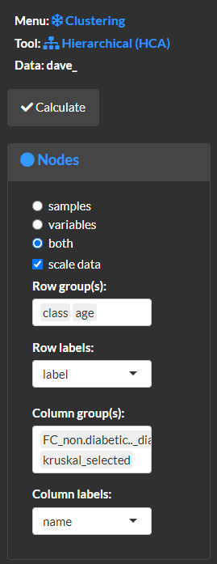
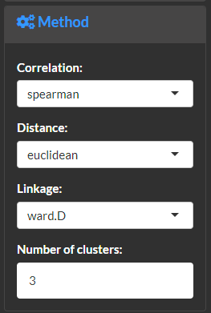
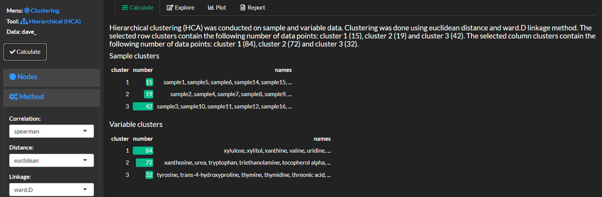
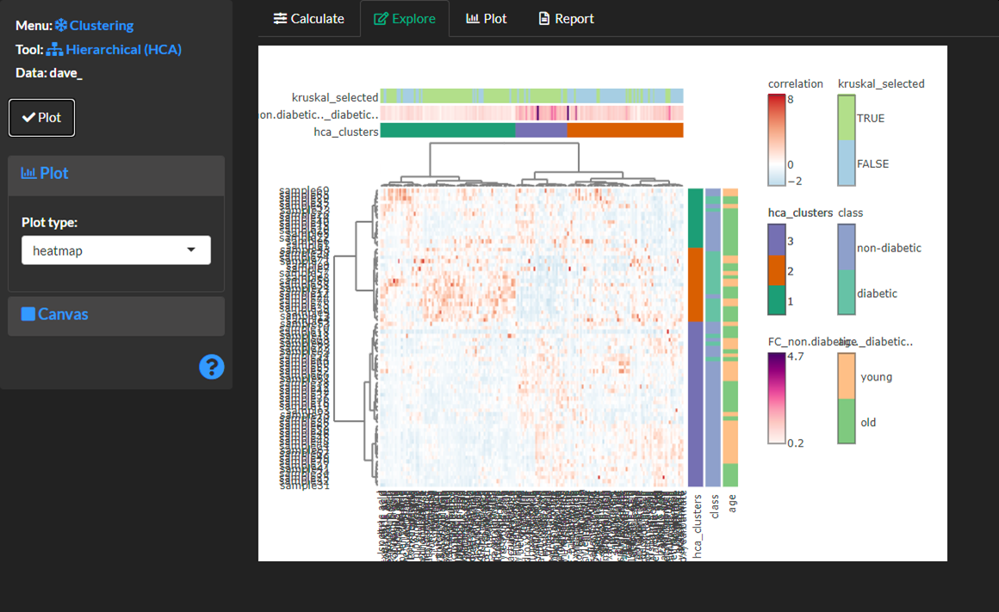
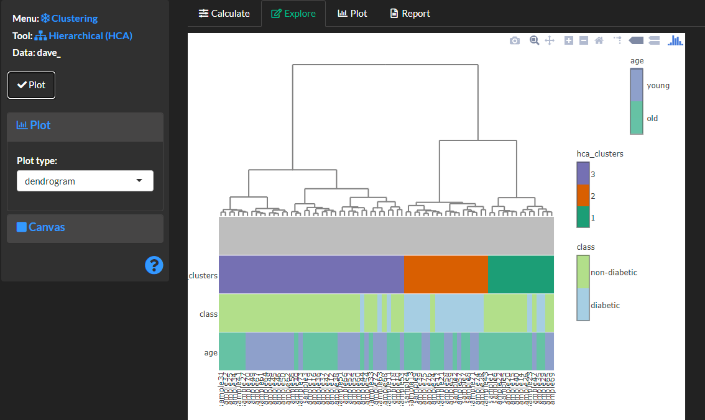
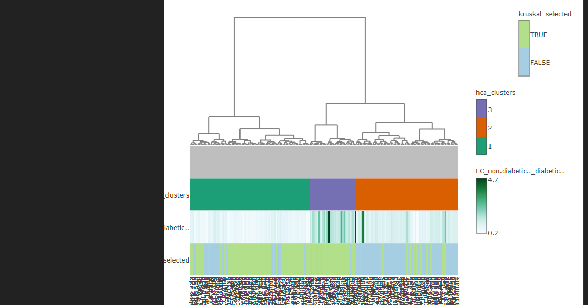
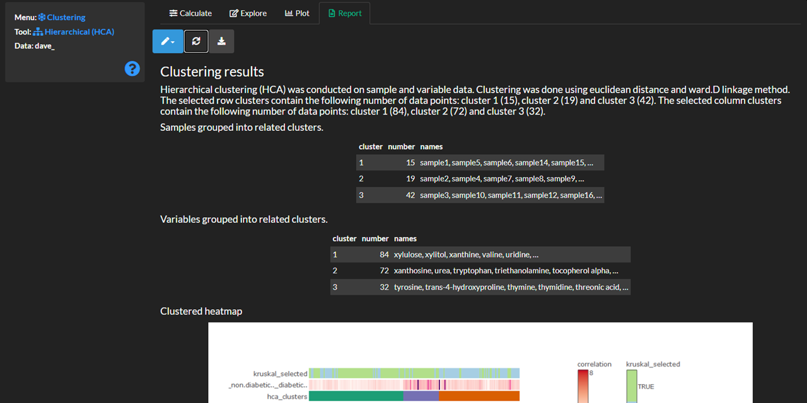

3 Clustering
Check out the user manual for more details about this module’s features.
Heirarchical clustering
Use the cluster >> heirarchical module to overview an unsupervised grouping of the data.
Methods
Specify the node properties and what dimensions of the data (samples (rows), variables (columns) or both) to cluster. For example, the selected options will cluster both rows and columns, scale the data based on subtraction of column means and division of column standard deviations, annotate the heat map to show class and age for samples and fold-change of means for class and significantly altered variables.


Select calculate and view the cluster analysis methods and results.
 ### Explore and plot
Create a heatmap or dendrogram to view the clustering results. Note, dendrograms are plotted separately for samples and/or columns.
Heatmap displaying heirarchal clusters for samples and/or variables.
 ##### Dendrogram displaying heirarchal clusters for samples.

Dendrogram displaying heirarchal clusters for variables.

Report
 ### Save